逻辑脉络：这一讲是怎么推过来的
1 · 抛出锚点
意识是心理学最核心的概念，类比物理的「存在」、数学的「数字」。
2 · 转入终极三问
我是谁 / 从哪来 / 到哪去。其中「我是谁」最根本，因为前两问都需要一个主语「我」。
3 · 换算成生与死
从哈姆雷特「生存还是毁灭」到现代医学对死亡的重新定义。
4 · 划出意识的边界
植物人、脑死亡、被囚禁的灵魂，证明意识比肉体更接近「我」。
5 · 拆解意识本身
河流（感知）与桥上的人（反省）；谁有意识（猫、毛毛虫、大模型、塑料网）；它为何极端私有、不可测。
6 · 落到可研究的属性
控制（延迟满足）与自由意志。
7 · 用实验冲击直觉
棉花糖实验、白熊实验、脑电实验，一层层证明「控制有限」「自由意志可能是幻觉」。
8 · 插入两把钥匙
尼采的「超人与野兽」、弗洛伊德的「冰山与防御机制」，解释人如何从野兽走向超人。
9 · 落到升华
达芬奇、蒙娜丽莎、勃艮第葡萄酒，说明痛苦如何转化为创造。
10 · 回收到意识的功能
孔雀的尾巴（意识让我们爱上自己）、存在感、自我价值、超越死亡。
11 · 终章设问
什么是意识？用磁铁与铁粉作答：物理世界自由意志是 nothing，心理世界是 everything。
目录（16 章）
开场：意识是心理学最核心的概念
00:20:54 - 00:24:22 · 课件 slide-01 至 slide-05
正式开讲前，刘嘉先处理两件事务：请同学们收起笔记本电脑（「你完全不用它，你就听我讲」），并为教室容量道歉，选课同学优先，旁听同学七点后入场。他还开了个玩笑活跃气氛：这门课若在商业机构完整听下来要花十万左右，「你现在坐地上、站着硬撑三小时，等于挣了七八千，带着挣钱的心态来听课就行」。
切入正题。这堂课的主题是 consciousness（意识），它是心理学里最核心的概念。刘嘉用一个类比来定位它的分量：
物理学最核心的概念是「存在」，物理学不可能讨论一个不存在的东西；数学最核心的概念是「数字」；那么心理学最核心的概念，就是意识。刘嘉
他强调这堂课的分量：「如果你把今天这堂课听明白了，后面哪怕坐地上、站在后面听，也都值了。」
为什么要讲意识？故事从「进清华校门」说起。外校旁听同学进校门要过保安这一关，而国内最早把开放大学封闭起来的是北大。保安会问你三个问题：你是谁？从哪儿来？到哪儿去？刚觉得保安讨厌，慢慢就听出了哲学味道，这不正是我们一辈子都在回答的问题吗？这就是人类的终极三问。
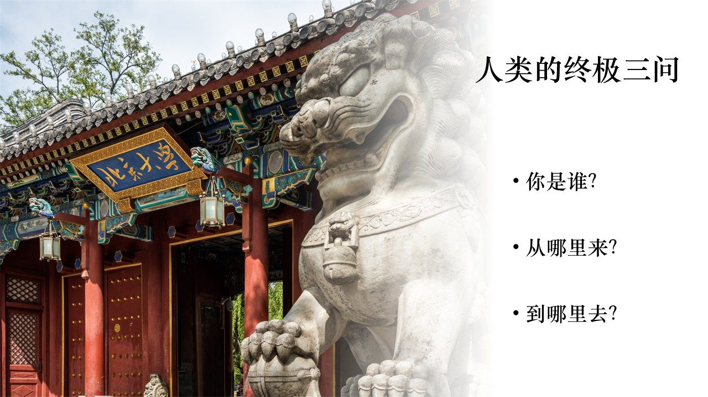
- 从哪里来：从物理学看，是宇宙如何诞生、时空如何展开；从生物学看，是 35 亿年前第一个细胞如何从无到有。
- 到哪里去：从哲学看，是人类的归途；从社会看，是文明如何演化、AI 超越人类后人还是不是文明的棋手。
- 我是谁：这是最根本的一问，因为「从哪来」「到哪去」都需要一个主语「我」，当我不存在，大爆炸无所谓，未来也无所谓。
本节要点
- 意识是心理学最核心的概念，相当于物理的「存在」、数学的「数字」。
- 人类终极三问：我是谁、从哪来、到哪去。
- 「我是谁」最根本，因为它是另外两问的主语。
从误入心理系到「我是谁」：一个保送生的岔路
00:24:22 - 00:28:18 · 叙事
这一节是刘嘉的自述，解释他为什么从物理走向心理。高中时他参加数理化竞赛拿到保送资格，可以任选专业。他当时的判断很朴素：数学太难、化学太简单（「跟文科差不多」），于是选了物理，想弄清楚「我们从哪里来」。志愿就这么填上去了。
结果通知书下来，录的不是物理系，而是心理系。一个来自五六线城市的 90 年代孩子，根本不知道心理学是啥。他带着通知书在信阳陆军学院军训（那时要训整整一年），找到北大老师说「我是保送生，该读物理」。老师说「对不起，写错一个字，等你回北大再改，反正军训在哪儿都一样」。
那一年军训他没事干，就琢磨「心理学到底是什么鬼」，正好找到一本书，欧文·斯通的《心灵的激情》（写弗洛伊德生平的传记小说）。看完他觉得「这比物理有意思多了」，因为这本书既没讲宇宙起源，也没讲文明，而是讲「我是谁」。回到北大后，他就没再去找老师改专业，留在心理系拿到了本科学位。
严格官方意义上讲我不是心理系的，但我在心理系拿到了本科学位。刘嘉
本节要点
- 刘嘉因保送通知书误写，从物理系进入心理系。
- 军训期间读《心灵的激情》（写弗洛伊德），被「我是谁」这一问打动。
- 从此留在心理学，尽管当时所有老师都说「弗洛伊德是伪科学」。
死亡的边界：从哈姆雷特到植物人
00:28:48 - 00:42:29 · 课件 slide-06 至 slide-12
「我是谁」很难回答，但可以把它换算成生与死：你死了就不再是你，活着的才是你。于是先问：什么是死？
哈姆雷特：生存还是毁灭
这是人类历史上最著名的戏剧场景。哈姆雷特说出了文学史上最著名的一句话：
To be, or not to be, that is the question.（生存还是毁灭，这是一个问题。）莎士比亚《哈姆雷特》
刘嘉现场播放了几位经典莎士比亚演员的演绎版本，让大家注意他们重音放在哪里，同一个「to be or not to be」，重音位置不同，对生与死的关注点就不同。
传统死亡定义被现代医学推翻
什么叫死？传统说法是心不跳、不呼吸了。但现代医学有了 ECMO（体外膜肺氧合）：心肺不工作了，可以在体外「外挂」一个心脏和肺，替你维持循环和呼吸，甚至从死神手里抢救回来。所以「心不跳、不呼吸」已经不能定义死亡。如果肉体定义不了死，那就看精神，大脑死亡才是真的死。
植物人：活着的肉体，缺席的意识
一个骑摩托车撞到电线杆的小伙子，头上撞凹一块，躺在病床上一动不动，这种状态叫植物人。肉体活着，但没有精神。判断依据有三条：
- 能进行物质与能量代谢：能呼吸、心跳、血压正常，头发、指甲还会长。
- 有本能神经反应：会咳嗽、打哈欠。
- 认知能力完全丧失：感知觉、思维、主动行为全无，脑电图是杂乱的，不像正常人有规律波形。
这时出现一个医学伦理难题：他可能躺十年、二十年，只要给足营养就能一直活下去。人类不需要大脑也能活下去，不需要意识也能活下去。那么我们是该让他有尊严地走，还是维持这种状态？如果躺在病床上的是你深爱的人，医生问你「拔不拔管」，你怎么决定？
磁共振实验：被囚禁的灵魂
刘嘉先讲了一个关键实验。把人放进磁共振扫描仪，让他想象自己在打网球，他的运动辅助区（SMA）会亮；让他想象在自己家里走动，运动皮层不亮，而表征空间的区域（海马旁回 PPA）会亮。也就是说，通过大脑激活，能知道一个人此刻在想什么。
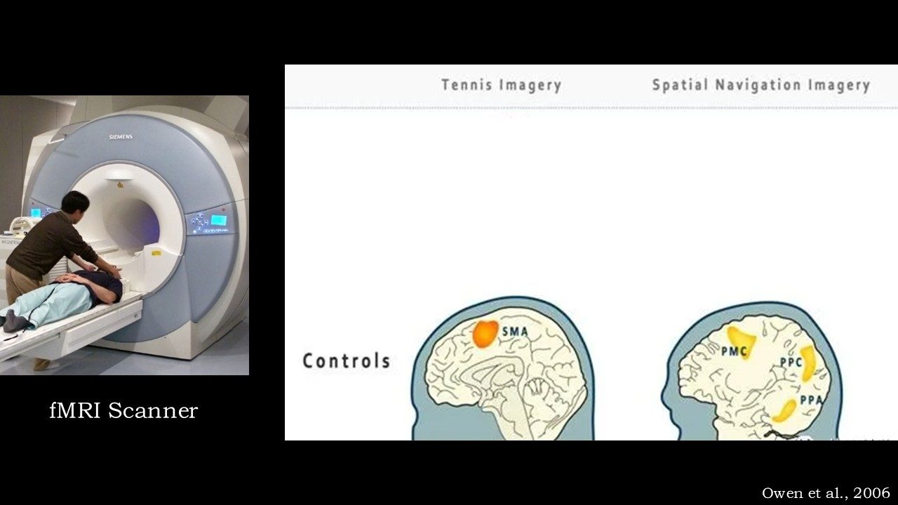
一位英国心理学家把这个实验用在了被诊断为植物人、可以拔管的深度昏迷患者身上：对着他们说「请你想象在打网球」「想象在你家里走来走去」，观察大脑是否激活。结果令人震惊，有些植物人（不是全部）的大脑激活，和正常人无法区分。他们对外界毫无反应，却能听见声音并做出反应，像被关进牢笼：你听不见他们的呼喊，他们却能感知整个外界。
《潜水钟与蝴蝶》：身体被囚，思想飞翔
这引出一个真实故事。一位时尚杂志主编脑干中风，全身瘫痪，只剩左眼能眨。但他的大脑完好，只是脑干中感知运动的区域受损。助手念 26 个字母，念到他要的字母时他眨一下眼，用这种方式一个字母一个字母写出了《潜水钟与蝴蝶》。
我的身体像潜水钟一样被禁锢，但我的思想能像蝴蝶一样自由飞翔。当喧嚣退去，我听见蝴蝶飞过我脑海的声音。《潜水钟与蝴蝶》
刘嘉说自己曾去天坛医院（国内看意识障碍最好的地方）参观植物人病房，回来就对亲人说：「只要我丧失了意识、被判断是植物人，一定不要保留，把管拔了。」因为对他来说，比死更恐怖的是自由的灵魂被囚禁在一个潜水钟里，能听见、能思考，却不能做出任何反应。
回到那个昏迷的小伙子：家人选择了不拔管。六个月后一个清晨，他睁开了眼睛。
本节要点
- 传统死亡定义（心肺停止）被 ECMO 推翻，转向以「脑死亡」定义死亡。
- 植物人有代谢与本能反应，但认知、主动行为、规律脑电全部丧失。
- 磁共振实验显示部分植物人仍有意识活动，像被囚禁在牢笼里。
- 《潜水钟与蝴蝶》证明「身体被囚、思想仍可自由」。
- 刘嘉个人立场：若成植物人宁可拔管；但真实案例里家人不拔管，患者六月后苏醒。
意识的两层：河流与桥上的观察者
00:42:32 - 00:44:20 · 课件 slide-13
现代心理学之父威廉·詹姆斯给了一个绝妙比喻。想象一幅图：一条河在不停流动。
- 第一层：感知（awareness）。河水白天黑夜都在流，哪怕你深度睡眠，外部信息照样进入大脑。除非进入植物态或深度麻醉，这条河才会停。这是意识较低的层次，叫觉知 / 主观经验（awareness）。
- 第二层：反省（consciousness）。桥上站着一个人，有时在桥上，有时不在。无论这个人在不在，河水都在流。但当这个人去反省内心河流的流动，「眼睛像翻转 180 度，回头看自己」，这才是高级层面的意识，真正意义上的 consciousness。
日常经验里就有它：上课走神时河水照样流（否则你听不见老师叫你），可老师一点名，你「马上回到桥上」：「老师我在这儿，专心听课，啥都没干。」
本节要点
- 意识有两层：低层是感知（awareness，河水流动），高层是反省（consciousness，桥上的人）。
- 河水流动不依赖桥上的人；桥上的人是对流动的「自我观察」。
谁拥有意识：从猫到大模型到塑料网
00:44:20 - 00:53:20 · 课件 slide-14 至 slide-18
桥上这个人是谁？谁拥有意识？我们能确定自己有意识，却很难证明旁边的人有意识。问题随生物复杂度一路追问：
- 猫有意识吗？现场相当一部分人举手。刘嘉打趣：你们大概率是养猫的。他说自己是四川人，原本爱吃兔肉，养猫后就再也不吃了，因为「兔腿和猫腿摸起来感觉差不多」。
- 毛毛虫呢？举手的人少很多。「你们为什么歧视毛毛虫？人家也有神经元好吗？」那多少个神经元才算有意识？这个问题先留着。
大模型有意识吗
2022 年 10 月 30 日 ChatGPT 问世。大模型有意识吗？多数人说没有。但有人认为有：
- 伊利亚·苏茨克维（Ilya Sutskever），GPT 之父、OpenAI 前首席科学家，2022 年 2 月在推特发文：「现在的大型神经网络已经有了一丝的意识（slightly conscious）。」别人问他感受到了什么，他不再回复。这成了他与 OpenAI 创始人萨姆·奥特曼分道扬镳的关键，他认为再发展下去大模型将不可遏制，必须把更多精力放在安全上；奥特曼说他「产生了幻觉」。
- 辛顿（人工智能之父、苏茨克维的老师）被问「AI 能有主观体验吗」时回答：「是的，我认为能。事实上，它们现在已经有了。」
- 唐杰（清华计算机系教授、智谱创始人）说，他未来 30 年的工作不是把智谱做成多牛的公司，而是让计算机拥有自我意识，这是他到清华退休前的最后一个项目。
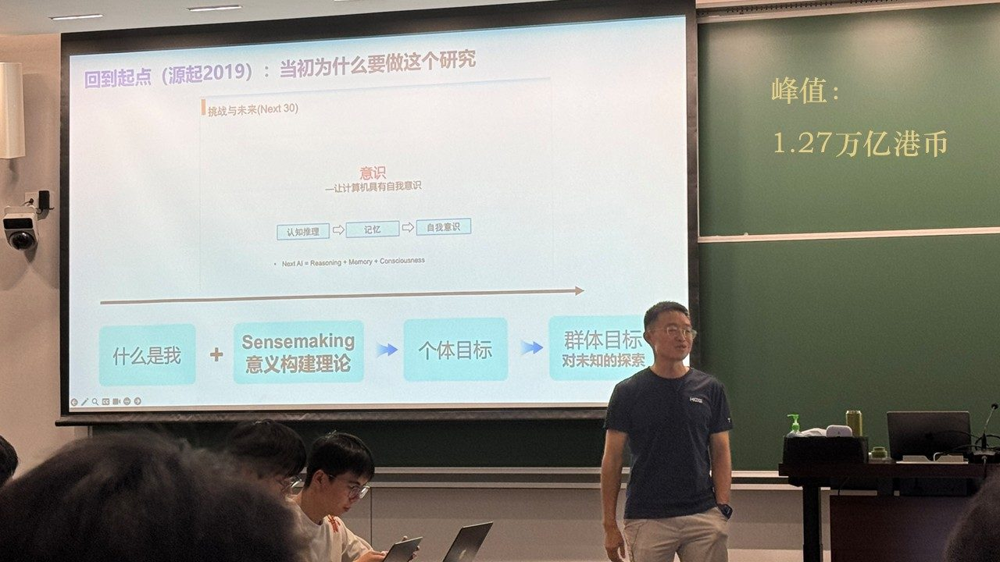
从唐杰身上能看到两点：一是他认为现在大模型还没有意识，二是大模型一定会有意识，我们只是在路上。
塑料网有意识吗：万物有灵论与 IIT
再走极端：一个塑料网有意识吗？当然没有。但刘嘉放了一段视频后，问大家「有没有那么一丝一毫的动摇」。学术圈里专门有个词叫万物有灵论，其核心代表理论是 IIT（整合信息理论）：
当信息复杂到一定程度，万事万物都可以产生意识，意识并非生物所独有。IIT 整合信息理论
塑料网没有意识，是因为复杂度不够；复杂度够了就一定产生意识，这个复杂度由 Φ（phi，整合信息量） 定义。IIT 不是边缘观点，而是当前意识领域占据最主流、有最多实验支持的理论。但另一批心理学家非常愤怒，专门写了篇文章标题就叫「IIT 理论是伪科学」。
于是问题回到原点：猫有意识吗？毛毛虫有意识吗？无论你答有还是没有，都要回答一个更基本的问题：你的判断标准是什么？不能拍脑袋说「我觉得有、我觉得没有」。
本节要点
- 意识的追问从猫、毛毛虫，推进到大模型、塑料网。
- 伊利亚·苏茨克维认为大模型「有一丝意识」，导致他与奥特曼分裂并主张加强安全；辛顿认为 AI 已有主观体验；唐杰把「让计算机有自我意识」定为未来 30 年目标。
- 万物有灵论 / IIT 认为复杂度足够即可产生意识，意识非生物独有，但遭部分心理学家批为伪科学。
- 核心难题：判断「有没有意识」的标准是什么？
意识为何不可测：颜色是一种心理量
00:53:21 - 00:59:53 · 课件 slide-19 至 slide-21
怎么判断意识存在？刘嘉用一朵花切入，区分两种属性：物理属性（一束光打上去，反射出电磁波，客观存在的物理量）和心理属性（颜色）。颜色不存在于物理世界，只存在于心理世界。物理世界叫电磁波，心理世界叫颜色。
证据很巧妙。电磁波是一维的：红光波长最长，紫光波长最短，两者在可见光谱上隔得最远。但在心理世界里，红色和紫色离得最近，「大红大紫」。如果颜色只是电磁波的直接反映，红与紫该是最不相像的两个颜色；事实恰恰相反。所以颜色是一个心理量，电磁波是一个物理量。
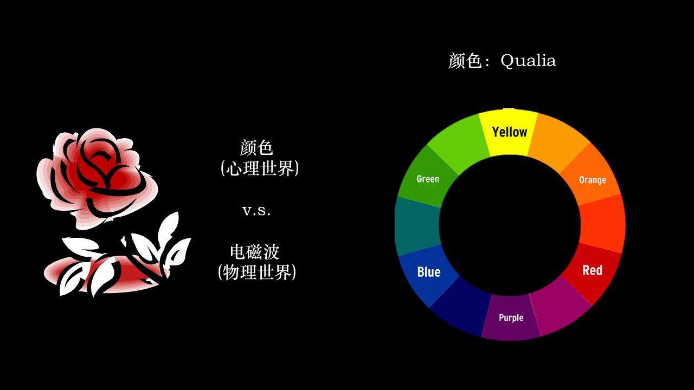
皮皮虾与色盲：换个生物看世界
人眼有三种色素细胞，能分辨约一万种颜色。换成皮皮虾（螳螂虾）去看这朵花，它有 12 种颜色敏感细胞，能看 11 万种颜色，在它眼里，在座各位都是色盲，那朵花是「爆炸型」的丰富色彩。
这就回答了上一节的难题：你知道自己有意识，但你怎么判断别的生物、别的人有没有意识？你判断不了，因为感知系统就不一样。你是一个色盲，就永远无法判断全色盲的世界是什么样。
意识是极端主观、极端私有、极端难测的。你眼睛的色素细胞和我的数量不同，你看到的红色和我看到的红色一定不一样；没法达成共识，它取决于你的感官。因此它最虚无缥缈，也最动人心弦。
你不会拿着一支粉笔看一个小时，说「这粉笔简直太有趣了」，因为它很客观、不私有、能测量，所以没有价值。而谈论意识时你觉得「太神奇了」，正是因为它的虚无缥缈，才把这么多人吸引进心理学。刘嘉
本节要点
- 一朵花有物理属性（电磁波）和心理属性（颜色）。
- 红紫在色环上最近、在光谱上最远，证明颜色是心理量而非物理量的直接反映。
- 皮皮虾有 12 种色觉细胞、能见 11 万色，说明感知系统因物种而异。
- 意识极端主观、私有、难测，判断他者意识几乎不可能，也因此最动人心弦。
意识的两个落点：觉知与控制（棉花糖实验）
00:59:53 - 01:14:20 · 课件 slide-22 至 slide-27
既然意识难直接研究，就从它的属性入手。两个属性：主观经验（subjective experience）/ 觉知（awareness），我知道我现在是清醒的、正在讲课（哲学上叫感受质 qualia）；以及控制（control）/ 自由意志（free will），我要做完作业再去玩游戏，这门课是我自己想选，不是老师拿枪逼我选的。后者更落地，也是本课重点。
控制从哪里开始：棉花糖实验
刘嘉问大家「你怎么考上清华的」，理由五花八门，但所有人都有一个共同特质，这就是著名的棉花糖实验。给小朋友一颗棉花糖，告诉他「现在吃只有一颗；等我回来就有两颗」。然后大人离开，看孩子能不能忍住当下吃糖的欲望、等待更大的收获。这种「为了更大收获而抑制当下欲望」的能力，叫延迟满足（delay of gratification）。
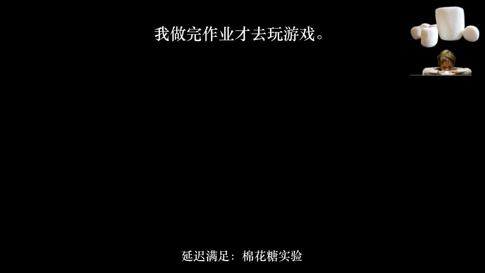
延迟满足是一个人事业成功、学业成绩最有效的预测因素，比家里有没有钱重要得多，比智商高低重要得多。刘嘉
在座能考上清华，多半都有这个能力：「我一定要做完作业再去玩。」但这件事对小朋友难，对成人更难。刘嘉举了几个日常例子：减肥的人上秤时恨不得把最后一口气吐出来，看见汉堡还是吃了；说要拥抱大自然去跑步，结果还是躺下来了。我们试图用理性战胜感性，但感性常常赢。
理性 vs 感性：人类文明的进化史
人类用极大的毅力让理性战胜感性：奥德赛穿过塞壬女妖的海域时把自己绑在桅杆上，再想动也动不了；雨果写《悲惨世界》时每次写作前把所有衣服脱掉交给佣人保管，脱光了就没法穿到街上去；康德用一辈子苦修写下名言：
有两样东西，越是经常和持久地思考，就越是以日久弥新和不断增长的魔力与崇敬充满心灵，我头顶的星空和我心中的道德律。康德
头顶的星空是宇宙的法则（宇宙如何一点点演化、终极目标是什么）；心中的道德律是善恶之分（什么是善、什么是恶、该追求什么样的生活）。刘嘉笑说高中写作文最爱引用这句话，因为「老师一读就热泪盈眶，不会注意我其他地方写得不通」。
本节要点
- 意识两个属性：觉知（主观经验 / qualia）与控制（自由意志）。
- 棉花糖实验揭示「延迟满足」是预测学业与事业成功最有效的因素，超过家境与智商。
- 理性常败于感性：奥德赛绑桅杆、雨果脱衣写作，都是人对抗诱惑的手段。
- 康德「头顶的星空与心中的道德律」代表人类理性追求的两极。
白熊实验：越控制，越反弹
01:14:22 - 01:18:50 · 课件 slide-28 至 slide-34
康德那句话很有用吗？刘嘉用一个著名实验给出转折，白熊实验（韦格纳）。
两个条件
- 条件一：给你看白熊照片，五分钟内你想什么都行，但每次想起白熊就摇一次铃铛。结果一开始频率高，慢慢就不想了。
- 条件二：给你看白熊照片，五分钟内绝对不能想白熊。大家自信能（「都能考上清华，怎么会控制不住」）。结果基本还能控制住，你有主观能动性，把念头压下去了。
但真正的反转在五分钟结束之后：一说「可以想任何东西」，结果是满脑袋的白熊，去不掉的白熊，甚至一周后、一个月后还会莫名其妙冒出来。
大脑机制：意识抑制 vs 无意识狂发
为什么反弹这么强？刘嘉用一张大脑工作图解释：指令「想白熊」发到意识，意识说「不行，要压住」，于是有意识地挡住；无意识发现「我寄的信没收到，丢包了」，就多写几封继续发，意识「魔高一尺道高一丈」继续挡。问题是意识的控制极其消耗能量，五分钟后能量耗竭，控制消失；而无意识还不知道，仍在哐哐哐地放白熊。
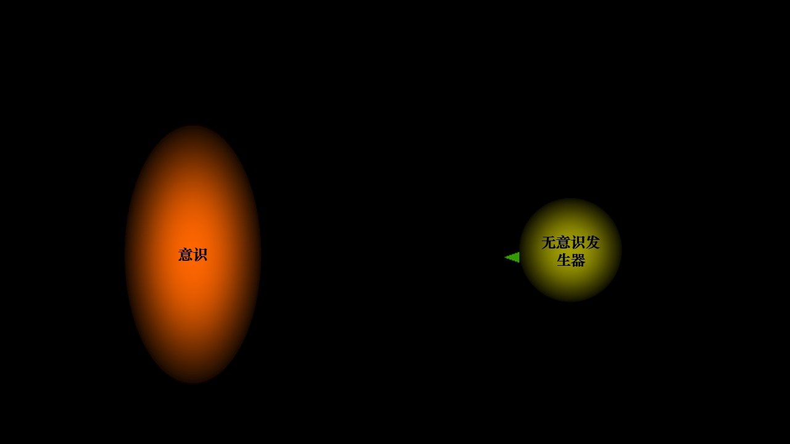
当你越想控制某件事，它的反弹就越重。你的控制只有五分钟，最糟糕的是五分钟之后的反弹，比你想的要强得多。刘嘉
伊甸园就是这个隐喻：上帝说不能摘苹果，亚当夏娃于是每天都在想苹果，最后被逐出伊甸园。
本节要点
- 白熊实验：抑制一个念头后，反弹会比自然状态更强、更持久。
- 机制：意识抑制耗能巨大、终会耗竭；无意识持续「加发」指令，越堵越发。
- 推论：越控制越反弹；伊甸园禁果是同一隐喻。
控制的一生：从虚假控制到失去控制
01:18:50 - 01:22:26 · 课件 slide-35 至 slide-38
把「控制」放大到一生来看。从出生、读书、工作、成家立业、变老到死去，唯有「控制」二字贯穿始终，也最难。
- 小时候：你一闹，父母就来照顾，你以为能控制。这是虚假的控制，不是你有本事，是父母怕你闹。
- 读书时：选课同学没座位，一反映，学校马上打十几个电话要求当天解决。这也是虚假控制，是学校怕你闹事。
- 进入社会：你去跟老板说「你这计划有问题」，老板只会把你开除。这时才发现，社会上的控制才是真正的控制。
- 上升期：努力工作，从组长到部门经理到副总甚至总裁，控制的资源越来越多。
- 退休 / 晚年：所有能控制的人和资源都没了，开始失去控制；对身体也失去控制，躺在床上大小便不能自理，生命走到尽头。
所以人的一生就是不断获得控制、最终失去控制的过程。而人生的悲剧在于：
我们总认为「一切皆可控制」，现在控制不了只是能力不够、运气不够、时机不够，有一天终究能控制。刘嘉
这正是「正义也许会迟到，但绝不会缺席」「举头三尺有神明」「善有善报、恶有恶报」的底层信念，我们相信有个神明在掌控一切、记录善恶。
本节要点
- 人一生都在追求控制，最终却必然失去控制。
- 小时候的控制是虚假的（别人让着你）；社会上的控制才是真的。
- 人生悲剧 = 「一切皆可控制」的错觉；这让人投向「神明在掌控」的信念。
尼采：上帝已死，超人与野兽
01:22:27 - 01:30:09 · 课件 slide-39 至 slide-41
「善有善报」需要一个神明来兑现。人类历史上都相信神，它提供了一个因果压缩：雷电、婚姻、运气、成功，一句「神的旨意」全解决。但尼采在《快乐的科学》里借一个疯子之口喊出：
上帝已死。尼采《快乐的科学》
这里的「上帝」不是基督教的神，而是西方文明的终极基石，康德说的道德律（什么是真、什么是善、人生为什么值得活、苦难为什么有意义）。近代科学把「这个是迷信、那个是错的」逐个击破，杀死了神。但麻烦在于：科学杀死了神，却没立一个新的东西出来。
- 物理学揭示世界如何运转，但没说什么真理值得追求。
- 生物学揭示人是进化来的，但没说人生为什么要有意义。
- 脑科学揭示大脑如何做道德判断，但没说为什么要惩恶扬善。
原来一切都可以「归给上帝」，心灵瞬间平静。现在上帝死了，真善还得追寻，科学却回答不了「为什么要这样」，人就陷入迷茫与虚无主义。
超人与野兽
尼采的答案是：一定要有个超人。注意，超人不是能力超强的 superman，而是超越自己的人。超人有三个特征：
- 不需要上帝、社会规范、传统习俗、大众评价来告诉自己怎么活，按自己的方法活。
- 接受世界没有预设意义，能忍受虚无主义（没有天堂、没有来世，仍能接受）。
- 摆脱固化的自我，重新塑造自己，超越自己。
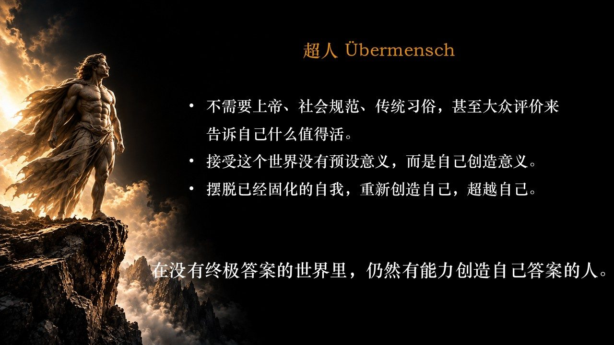
但尼采发现很难，在一个没有答案的世界里自己找答案太难了。于是他在另一端又放了一个野兽：遵循生活本能（饿了吃、被欺负打回去）、接受现有秩序被动遵守、处于演化之中是未完成的存在。
人是一根绳索，系在动物和超人之间。尼采
可惜尼采没想清楚「那根绳子到底是什么」。1886 年他想「我是谁」想得太多，陷入精神分裂，十年后（1900 年）去世。而在他去世的这一年，另一位大牛诞生了，他详细说清了什么是超人、什么是野兽、什么是那根绳子。这个人就是弗洛伊德。
本节要点
- 尼采「上帝已死」：科学杀死了神（道德律的基石），却没立起新价值，导致虚无主义。
- 超人 = 超越自己的人，三特征：不靠外在规范、忍受虚无、重塑自我。
- 野兽 = 本能、守序、未完成。
- 「人是系在动物与超人之间的绳索」；尼采未能解释这根绳子，留给弗洛伊德。
弗洛伊德：冰山、防御机制、哀伤与抑郁
01:30:11 - 01:42:49 · 课件 slide-42 至 slide-49
尼采去世的 1900 年，弗洛伊德出版《梦的解析》。扉页用拉丁文写着「假如我不能上达天堂，那我将下入地狱」，他对这本书充满信心，说它「直接把以前的人和后面的人分开了」。
冰山理论：看见水面下的自己
有了弗洛伊德，人类才第一次真正看见自己。以前看到的都是水面上的冰山一角；他让我们看见水面之下、一片黑暗中的真正的自己。
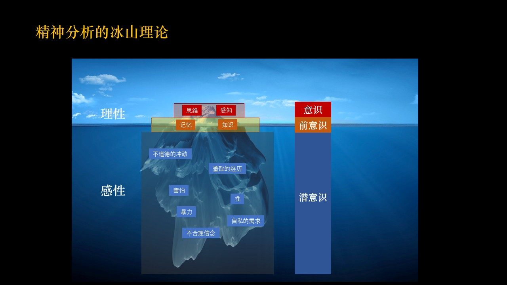
- 水面之上（意识）：理性、思维、感知，就是康德的道德律、尼采的超人。
- 水面上下交界（前意识）：记忆、知识，需要时提取。
- 水面之下 80%（潜意识 / 无意识）：不道德的冲动、羞耻经历、害怕、性、暴力、自私需求，就是尼采说的野兽、我们的欲望。
于是，「我是谁」里那根绳子清晰了：野兽（欲望、潜意识）与超人（理性、意识）之间的张力。弗洛伊德的贡献就是把尼采抽象的概念具象化了。
六大防御机制：从野兽进化到超人
人怎样从野兽走向超人？弗洛伊德提出防御机制，前五种是「把野兽按住」：
- 压抑（repression）：把野兽压死、不放出来。但白熊实验已经证明压不住，奥德赛把自己绑住都没用。
- 置换（displacement）/ 取代：用可接受的行为取代不可接受的。咬手指其实是小时候吮吸母亲获得温暖，成年后社会不允许，就用咬手指「取代」。
- 反向形成（reaction formation）：恐同症患者往往是同性恋，为了躲避社会歧视，反向形成「坚决反同」来掩藏本质。心理学家给看同性 / 异性照片测瞳孔，嘴上说「有伤风化」，瞳孔却放大了。金庸说「不想被人拒绝，就先拒绝别人」，也是反向形成。
- 投射（projection）：自己小气，就说「周围人全是小气鬼，就我大方」。辛弃疾「我见青山多妩媚，料青山见我应如是」，也是投射。
- 合理化（rationalization）：「我都是为你好」。父母打小孩「怕你走上邪路」，其实是把自己的暴力倾向合理化；项羽「时不利兮骓不逝」，把失败归给时运，也是合理化。
这五种都在试图藏起野兽、露出超人，但很多时候不起效。于是有了第六种（下一节详述）：升华。
哀伤与抑郁：两种不同的痛苦
1917 年弗洛伊德写《哀伤与抑郁》，区分两者，千万不要以为抑郁只是「极度悲伤」：
- 哀伤（mourning）：来自外部物理世界的丧失，朋友去世、丢了一万块钱。「这个物理世界对我太不友好了。」是物理世界变得贫瘠空洞。
- 抑郁（depression）：指向内心世界，对自己不满意、觉得自己不行、不配、对世界是浪费。此时「野兽压不住了，开始吃掉超人」。
抑郁症是导致自杀的最大原因。若一个人自杀了，大概有 70%-80% 的概率是因抑郁症。弗洛伊德
本节要点
- 弗洛伊德冰山：意识（超人）、前意识（记忆）、潜意识 80%（野兽 / 欲望）。
- 六大防御机制前五种，压抑、置换、反向形成、投射、合理化，试图藏起野兽，但常失效。
- 哀伤来自外部丧失，抑郁来自自我否定；抑郁是自杀主因。
- 《梦的解析》首版十年只卖 600 本，为推广理论，弗洛伊德「碰瓷」达芬奇。
达芬奇与创伤的升华
01:42:49 - 02:00:15 · 课件 slide-50 至 slide-57
《梦的解析》出版后遇冷，十年只卖了 600 本。为推销理论，弗洛伊德决定「碰瓷」文艺复兴第二大光棍达芬奇，用精神分析解读他。
达芬奇：天才与消极
达芬奇不只是艺术家，还是科学家，被称为「文艺复兴第一人」，样样顶尖。但他性格消极、漠然、压抑，避免一切对立争议：「一个人没有权利去爱或恨任何事，除非他已完全了解自然本性的所有知识。」他高大帅气、一堆女性追求，却是光棍，宣称「与生儿育女有关的任何事都令人厌恶」。这样一个极聪明、极有成就、极帅气的人，却有极其负面的性格与情绪，正好成了弗洛伊德「碰瓷」的对象。
恋母情结与蒙娜丽莎
弗洛伊德写《列奥纳多·达·芬奇和他的童年记忆》，一出版就洛阳纸贵。他分析说达芬奇有恋母情结（俄狄浦斯情结，杀父娶母）：达芬奇自传写「摇篮里一只秃鹫飞来，用尾巴撬开我的嘴、拍打我的嘴唇」，弗洛伊德解读为母亲喂母乳的意象。达芬奇是贵族父亲与农家女的私生子，随母生活到五岁时被接回庄园，从此永远和母亲分离。终其一生，他对母亲充满思念、爱恋。
这种痛苦是有价值的：他不能娶母（违反世俗），只能深深压抑，造成一生痛苦；但他把痛苦转换成创作力。于是「终身对母亲的思念与爱恋，最终变成了《蒙娜丽莎》的微笑」。
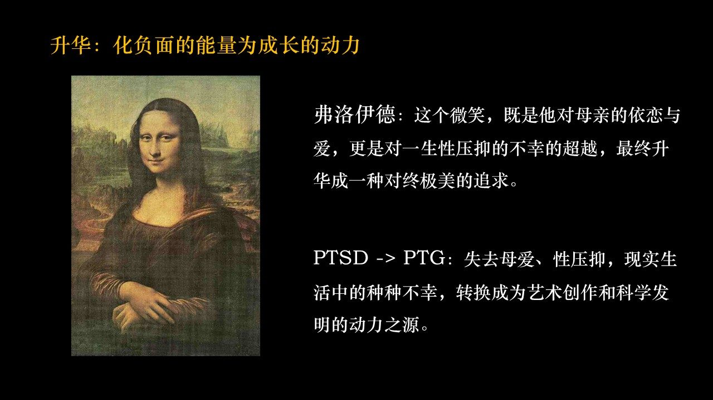
这个微笑既是对他母亲的依恋与爱，更是对他一生压抑的不幸的超越，最终升华成一种对终极美的追求。弗洛伊德
升华：第六种防御机制
这就是现代心理学要做的：把 PTSD（创伤后应激障碍） 变成 PTG（创伤后成长），这就是升华，弗洛伊德的第六种防御机制。失去母爱、性压抑、现实种种不幸，转换成了科学创作与发明的动力。
存在主义先驱克尔凯郭尔说「苦难是人类最宝贵的财富」，不是受虐狂，而是说苦难有时会找上你，此时就是成长的机会。宏观上，科学发展往往源于对疾病与灾难的应对，社会进步常伴随对不公的反抗；个人层面，每个人都必须面对孤独、焦虑、死亡，这些迫使我们审视内心、深刻反思信念与选择，从而找到真正的存在意义与使命。
抑郁源于痛苦，伟大同样源于痛苦。当你在苦难里，要么在痛苦中毁灭，要么在痛苦中升华。刘嘉
勃艮第葡萄酒：故事的价值
刘嘉用一个故事收束。世界上最贵的葡萄酒是罗曼尼·康帝（勃艮第）。呼应第一讲「世界是由故事而非原子构成的」，勃艮第有个极其漂亮的故事：那里土壤是石灰岩砂石、气候多变、极难种庄稼；一个修道院的僧侣除拜上帝外专心种葡萄，把种葡萄当成上帝的考验，酿成葡萄酒；正是变幻无常的季节给葡萄注入丰富口味。僧侣酿酒却不喝（要禁欲），一年只有酒神节那天可品尝一口，开瓶时芬芳远超任何地方的酒。
这个故事讲的是：告别零和博弈。不要想着「理性战胜感性」或「感性吃掉理性」，它们是同一事物的两面。内心既有超人也有野兽，不必让野兽吃掉超人，也不必让超人打死野兽，而要让两者和谐共处，这就是升华，两者终于握手言和。
本节要点
- 《梦的解析》遇冷后，弗洛伊德用精神分析「碰瓷」达芬奇，一举成名。
- 达芬奇的恋母情结与母亲分离的童年创伤，压抑后升华为《蒙娜丽莎》的微笑（端庄 + 魅惑）。
- 升华 = 把 PTSD 转成 PTG，把创伤转成创造动力；抑郁源于痛苦，伟大也源于痛苦。
- 勃艮第葡萄酒的故事价值，呼应「世界由故事构成」；升华是超人与野兽握手言和，不是零和搏斗。
自由意志是幻觉：脑电实验与拉普拉斯妖
02:00:15 - 02:15:57 · 课件 slide-58 至 slide-69
讲完无意识，转到意识的另一端，也是它的最高峰，自由意志。为什么是最高峰？裴多菲的诗写得最清楚：
生命诚可贵，爱情价更高。若为自由故，二者皆可抛。裴多菲
裴多菲是匈牙利诗人，俄国入侵、压迫匈牙利时写下此诗。他刚新婚、刚有孩子，却抛家弃子参加战斗，26 岁为自由而死。在他心中，自由意志比生命、爱情都重要。但如果告诉你，自由意志只是幻觉呢？
斯宾诺莎有个比喻：「人类的自由意志，好比一颗自以为选择了飞行路线和落点的石头。」你只是被抛出的石头，轨迹、每一点都被定死了，但你觉得是自己选的。
脑电实验：意识晚于决定
用脑电图（EEG）记录大脑电活动，研究发现「准备电位」，想动手之前，对侧大脑先活跃起来。于是用这个标记物做实验：受试者不用任何计划，想动手指就动；墙上有精确的钟，受试者报告「我什么时候想动手指」和「手实际什么时候动」。倒推（以手指运动时刻为 0）：
| 事件 | 时刻（相对动作） |
|---|---|
| 准备电位（大脑已决定要动） | −535 毫秒 |
| 意识到「我想动手指」 | −200 毫秒 |
| 意识到「手指在动」 | −86 毫秒 |
| 手指实际运动 | 0 |
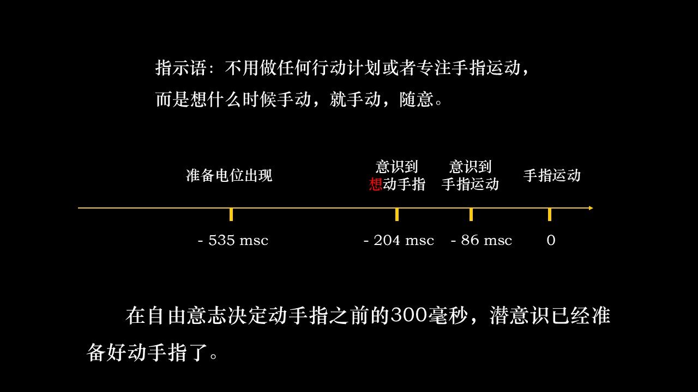
在你「意识到」想动手指之前 300 毫秒，潜意识已经准备好动手指了。我们以为「我想拿水杯，于是拿了」，这只是一个错觉，那中间的因果箭头是虚假的因果路径。刘嘉
副驾驶比喻
把你自己想成一辆车：意识 / 自由意志坐在副驾驶，有个隐形人（潜意识）在开车。你盯着驾驶员，看不见那个开车的人，于是以为「是我在控制这辆车」，还「言出法随」（我说左转就左转）。其实你只是个观察者。
拉普拉斯妖：宇宙大爆炸已写好一切
再往前推一步。拉普拉斯妖是一个算力无穷大的智者：
宇宙的现状是过去的果、未来的因。若有一个智者知道某一刻所有自然运动的力和所有物件的位置，那么宇宙中最大到最小的粒子运动都包含在一个公式里，未来像过去一样展开在面前。拉普拉斯
用一个公式：F(x₀) = x(t)。宇宙大爆炸那一瞬间定死了所有物理定律（过程不会新增定律）和所有初始条件（每个粒子的位置与方向）。于是未来可以算出来，这叫可计算 / 可归约。就像你存 100 块钱、年息 5%，能算出 100 年后变成多少，只是公式更复杂、初始条件更多，从概率上是一回事。
我现在说的每一句话、下一刻要说的每一句话、各位辛辛苦苦来听这堂课，在宇宙大爆炸那一刻就已经决定好了。刘嘉
推到这一步，自由意志就是虚假的，努力也「没意义」（都定好了）。当然拉普拉斯妖有争议：有人用量子力学反驳（概率增加了一个因素）、有人说「算不过来」，但这不是定论。
本节要点
- 自由意志是意识的最高峰（裴多菲「若为自由故，二者皆可抛」）。
- 脑电实验：准备电位（−535ms）早于「意识到想动」（−200ms）约 300 毫秒，说明决定先于意识。
- 副驾驶比喻：意识是观察者，潜意识是隐形驾驶员。
- 拉普拉斯妖：宇宙大爆炸定死定律与初始条件，未来可算；自由意志是幻觉，导致虚无主义（有争议）。
孔雀的尾巴：意识让我们爱上自己
02:15:58 - 02:21:55 · 课件 slide-70 至 slide-73
如果自由意志是幻觉，人怎么找回自主性？刘嘉说，答案要从孔雀的尾巴讲起。
达尔文的 bug 与性选择
孔雀的尾巴很美，但对达尔文是「致命打击」，他甚至说「我一想到雄孔雀的尾巴就反胃」。因为《物种起源》讲的是适者生存，每一项功能都应服务于生存：无毒的蜈蚣长得鲜艳，是为了吓退天敌；但雄孔雀的尾巴纯粹是装饰性的，长得大还跑不快、易被捕食，又耗大量能量，这是进化论解决不了的 bug。
达尔文晚年终于打上补丁（《人类的由来与性选择》）：雄孔雀花哨的尾巴不是为了飞得更高，而是让它在雌孔雀眼里更有魅力。这背后的含义是：这个世界不只生存（适者生存是第一步），还要生活（活得更好、在异性面前有魅力），这是性选择、第二性征。
艺术的功能：让观赏者爱上艺术家
弗洛伊德敏锐抓住这一点：
人类艺术最重要的功能之一，就是让观赏者爱上艺术家。弗洛伊德
雄孔雀长漂亮尾巴是为了让雌孔雀爱上自己。这里的「艺术家」是隐喻，艺术家 = 我创造的故事（我的经历、成就、遇见的人、走过的路）；观赏者 = 我的意识。
你得有个观众，观众就是意识。意识让我们每个人爱上我们自己。自由意志就是我们精神世界雄孔雀的尾巴，它让我们爱上自己。刘嘉
回到桥上的人
再看开篇那幅图：河水流动就足够了，为什么桥上还要站一个人？因为河水是你对世界的感知、你经历的故事，而桥上的人是来欣赏这个故事的，他就是你的意识。他会在桥上看飘过的花多优雅、流过的水多清澈，让你爱上自己。
意识的功能不是让你「想拿水杯就拿水杯」，那没有意义。意识的本质是让我们每一个人都爱上自己。刘嘉
本节要点
- 孔雀尾巴是进化论的 bug，用「性选择」补上：世界不止生存，还要生活 / 被爱。
- 弗洛伊德：艺术的功能是让观赏者爱上艺术家；艺术家 = 我的故事，观赏者 = 意识。
- 自由意志是精神世界雄孔雀的尾巴，让我们爱上自己。
- 桥上的人（意识）欣赏河水（经历），这是「自我欣赏」。
意识的三大功能：存在感、自我价值、超越死亡
02:21:55 - 02:45:38 · 课件 slide-74 至 slide-82
意识如何让我们爱上自己、成为「我」？三个功能。
一、放大存在感
1. 疼痛变成「你的疼痛」。打你一拳，若只有感受细胞，就只是一种疼痛；但意识去体验时，它才变成「你的疼痛」。同样是挨一拳，仇人打你，你愤怒要打回去；爱人打你，是恋人打闹；导师打你，你「敢怒不敢言」。疼痛本身有了意义，这个意义与你密切相关。
2. 把经历连成故事。只有「我」才能把各种经历连接成一个连续体，成为真正的你。别人读你的简历只是流水账；只有你知道初中在哪读、为何被迫转学、和好朋友怎么撕心裂肺，这才构成完整的你。意识像观众一样点评：「这个不错保留，那个下次别这么干」，让「艺术家」不断改变风格。
3. 建立坐标系。每个人有两个坐标系：物理世界的坐标系，和心理世界以我为中心的坐标系。所以同一东西，不同人看法完全不同。刘嘉举了「臭鳜鱼」的例子：一位院士特别爱吃臭鳜鱼，把最好的一块夹给他，他觉得「跟屎一样」，又不好拒绝。院士很难理解他为什么不吃，他也受不了院士的「好意」，因为两人的坐标系不同。
意识让你变得独特。你和别人聊不到一块去，是因为坐标系不一样，没必要强迫对方接受你的观点。刘嘉
于是有了世界上最重要的一个词，「我」。世上没有任何一个词比「我」更重要，没有「我」就啥都不是。当任何人让你放弃爱好、喜欢、习惯时，你要知道他在伤害你的「我」。
证据：自画像与「我」的消失。一位画家被诊断出阿尔茨海默症，知道自己会慢慢消失，于是每年给自己画一幅自画像，1996 年还好，1999 年已难辨，2000 年（最后一年）「我」已经消失。阿尔茨海默不是变得弱智，而是意识消失、不再知道自己是谁。精神分裂症患者的自画像同样「裂开」，不是肢体分裂，而是统一的「我」不存在了。所以：意识即存在，有意识才有存在。
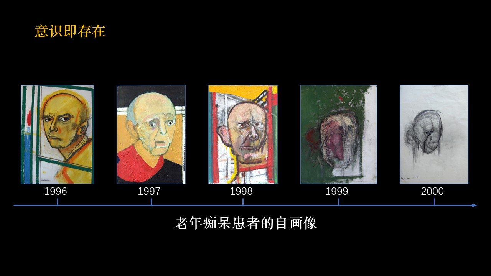
悖论：意识越丰富，对死亡就越恐惧。因为你越爱自己，越不忍心看「我」消失。意识让生命真正拥有「我」，也让生命知道我终将失去我。人活在最大的确定（一定会死）和最大的不确定（哪天死）之间挣扎，猫狗不会，它们每天吃睡、身体不行了就找个坑死去，一辈子很快乐。
二、滋养自我价值
动物是即时满足（饿了就吃）；棉花糖实验里的小朋友是延迟满足（饿了想吃但不吃，因为有两颗棉花糖等着）。延迟满足把一种生理欲望，转化成我自己的价值。
这个价值从哪来？选择。而选择是世界上最奢侈的行为。刘嘉去给朋友的小孩辅导高考志愿，讲了一整天，结果那孩子是个「学渣」，分数连北京最差的学校都过不了，学渣是不配有选择权的。
怎么理解选择？刘嘉引用他最爱的电影《黑客帝国》。先知（Oracle）问尼奥「要吃糖吗」，尼奥说「你是预言家，已知我吃不吃，何必问我」。先知说了一句极有哲理的话：
你到这里来不是来做选择的，你已经做完选择了。你到这里来，只是来理解你为什么做这个选择。《黑客帝国》先知
一个 trick：假设两个女孩（A、B）追你，只能选一个，越列清单越乱。很简单，抛硬币，头朝上选 A、尾朝上选 B。硬币抛起、你脱口而出「头朝上」，行了，你已经有答案了。硬币是随机的，但你说「头朝上」的那一刻，潜意识其实已经做了选择，只是你不知道。所以先知那句话的意思就是：你早就选了，只是不知道选了哪个，抛硬币帮你理解你的选择。
潜意识（水下 80%）已经帮你决定好了；意识的职责是来理解潜意识为什么这么做。刘嘉
选择如何展开人生？刘嘉画了一幅平行宇宙图：每做一个选择，就迈入另一个平行宇宙。你选了清华，就必然看不到北大的清晨。你的价值决定了你的选择，选择引发你的人生。
这就是从野兽到超人的进化：原来「吃饱吃好」就行；现在你选择不吃肉、啃草，不是为了味道，而是为了健康。再看「舔狗」：初级舔狗是希望女神对自己笑一笑；高级舔狗是寻找尊严，阿德勒说的「我爱你，但与你无关」，对你好不需要回报。
没有意识，我们只有趋利避害；有了意识，我们才追问「这么做为什么是值得的」。刘嘉
三、超越死亡的恐惧
前面说意识越丰富、死亡越尖锐；但意识也超越了死亡恐惧。死亡意识是人所独有，动物没有，AI 也没有（AI 可永生：GPU 坏了换一块）。但这是好事。乔布斯说：
死亡是生命的最后一个发明，它触动生命的变革、推陈出新。乔布斯
当你知道时间所剩无几，就会想「这件事不能等到明天」。如果你知道自己永生，今天着什么急？永远不会有什么大的变化。所以「你只能活一次（YOLO）」是个人和文明发展最原始的动力。当你真正相信「只能活一次」，创造力才会极大迸发。
潜意识里的苦难与欲望，提供前行的能量；意识里的爱（爱自己），指引前行的方向。刘嘉
本节要点
- 意识放大存在感（疼痛、故事、坐标系），让人独特而有「我」。
- 阿尔茨海默 / 精神分裂自画像显示「意识即存在」；意识越丰富，对死亡越恐惧。
- 意识滋养自我价值：延迟满足把欲望升华为价值；选择是最奢侈的行为；「你不是来选择，是来理解你的选择」。
- 意识超越死亡恐惧：死亡意识是人独有，「只能活一次」是创造力的原动力。
- 潜意识提供能量，意识（爱自己）指引方向。
什么是意识：磁铁与铁粉
02:45:49 - 02:49:06 · 课件 slide-83 至 slide-84
讲了这么多边角料，「到底什么是意识」？这个问题其实没人真正回答过。有人拿去问现代心理学之父威廉·詹姆斯，他没直接回答，而是用罗密欧与朱丽叶的故事来讲：罗密欧想要朱丽叶，像磁铁想要铁粉一样，都是极其地「想要」。若两者之间没有任何阻碍，他们会不顾一切跑向对方。但世间总有阻碍，一道墙、一条崎岖的路。
对磁铁和铁粉而言，路径是定死的，未来取决于障碍：没有障碍就在一起，有障碍就愚蠢地贴在墙的两边，永远不能相见。但对人而言，路径是不定的，目的却是确定的，罗密欧与朱丽叶会排除千难万阻、经历千辛万苦，最终一定在一起，而不是愚蠢地贴在墙的两边。
这就是意识。威廉·詹姆斯
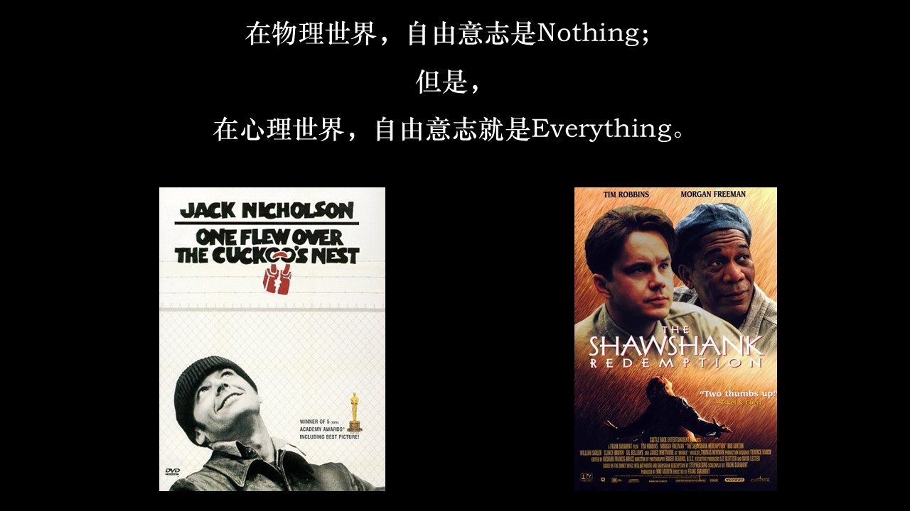
在物理世界，自由意志是 nothing（可能是幻觉）；但在心理世界，自由意志是 everything。它构成了心理学最核心、最底层的基石。刘嘉
最后，刘嘉强烈推荐电影《肖申克的救赎》（台湾旧译「刺激 1995」）。他说当年在北大最迷茫时，看到这个「译得很烂」的片名不想看，直到有一天实在没得看了才看，结果「人就傻掉了」，一部电影怎么能拍得如此之好。
本节要点
- 什么是意识？威廉·詹姆斯用磁铁与铁粉作答：磁铁与铁粉路径定死、被障碍困住；人路径不定、目的确定。
- 自由意志在物理世界是 nothing，在心理世界是 everything，是心理学最底层的基石。
- 推荐电影：《肖申克的救赎》。
课堂时间轴（回放时间点）
| 回放时刻 | 内容 |
|---|---|
| 00:20:54 | 开场：意识是心理学最核心概念；人类终极三问 |
| 00:24:22 | 刘嘉误入心理系、读《心灵的激情》 |
| 00:28:48 | 哈姆雷特「生存还是毁灭」；ECMO 与死亡定义 |
| 00:31:56 | 植物人状态；磁共振实验；被囚禁的灵魂 |
| 00:38:12 | 《潜水钟与蝴蝶》；拔管与否；六月后苏醒 |
| 00:42:32 | 威廉·詹姆斯：河流与桥上人 |
| 00:44:20 | 猫、毛毛虫有意识吗 |
| 00:46:40 | 大模型有意识吗（苏茨克维、奥特曼、辛顿、唐杰） |
| 00:49:49 | 塑料网、万物有灵论与 IIT |
| 00:53:21 | 花的物理属性与心理属性；颜色是心理量 |
| 00:56:03 | 皮皮虾与色盲；意识极端私有、难测 |
| 00:59:53 | 意识两属性：觉知与控制 |
| 01:01:05 | 棉花糖实验；延迟满足 |
| 01:10:05 | 理性与感性；奥德赛、雨果、康德 |
| 01:14:22 | 白熊实验；抑制反弹 |
| 01:17:07 | 大脑机制：意识抑制 vs 无意识狂发 |
| 01:18:50 | 控制的一生；虚假控制到失去控制 |
| 01:22:27 | 尼采「上帝已死」；虚无主义 |
| 01:27:05 | 尼采的超人与野兽；人是绳索 |
| 01:30:11 | 弗洛伊德《梦的解析》；冰山理论 |
| 01:33:36 | 六大防御机制 |
| 01:40:07 | 哀伤与抑郁；抑郁是自杀主因 |
| 01:42:49 | 弗洛伊德「碰瓷」达芬奇 |
| 01:45:25 | 达芬奇恋母情结；蒙娜丽莎的微笑 |
| 01:52:13 | 升华：PTSD 转 PTG；克尔凯郭尔论苦难 |
| 01:56:20 | 勃艮第葡萄酒与故事的价值 |
| 02:00:15 | 自由意志：裴多菲；斯宾诺莎的石头 |
| 02:02:59 | 脑电实验；准备电位早于意识 |
| 02:07:24 | 副驾驶比喻；拉普拉斯妖 |
| 02:15:58 | 孔雀的尾巴；性选择 |
| 02:18:46 | 艺术的功能：让观赏者爱上艺术家 |
| 02:21:55 | 意识放大存在感（疼痛、故事、坐标系） |
| 02:28:00 | 阿尔茨海默 / 精神分裂自画像；意识即存在 |
| 02:32:18 | 意识滋养自我价值；《黑客帝国》先知；选择的奢侈 |
| 02:43:01 | 意识超越死亡恐惧；乔布斯；YOLO |
| 02:45:49 | 什么是意识：磁铁与铁粉；推荐《肖申克的救赎》 |
核心金句
有两样东西，越是经常和持久地思考，就越是以日久弥新的魔力充满心灵，我头顶的星空和我心中的道德律。康德
人是一根绳索，系在动物和超人之间。尼采
人类艺术最重要的功能之一，就是让观赏者爱上艺术家。弗洛伊德
意识的本质是让我们每一个人都爱上自己。刘嘉
我们到这里来不是来做选择的，我们已经做完选择了，只是来理解我们为什么做这个选择。《黑客帝国》先知
我爱你，但是与你无关。阿德勒